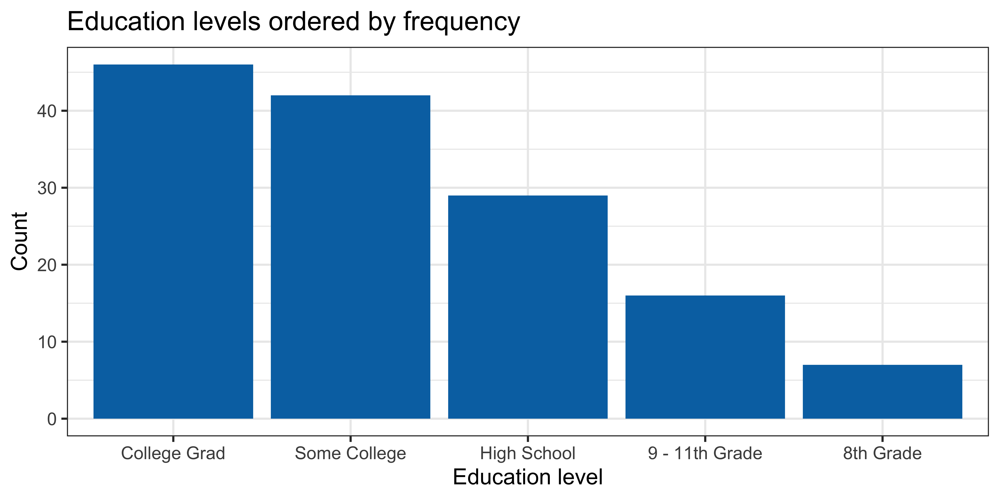

R Module 2: Factors and Reshaping Data
BMSC 620 | R Workflow Series
What We’re Learning Today
By the end of this module, you will be able to:
- Understand the difference between characters and factors in R
- Use forcats functions to reorder and relabel factor levels
- Recognize when data is in wide vs. long format
- Use
pivot_longer()andpivot_wider()to reshape data
Note
These skills come up constantly — every time you make a plot with categories or need to restructure data for analysis.
Two Problems You’ve Probably Already Hit
Problem 1: You make a bar chart and the categories are in alphabetical order instead of a meaningful order.
Problem 2: You have data with multiple columns that should really be rows (or vice versa) and your ggplot() code won’t cooperate.
Both problems have the same root cause: R doesn’t know what you know about the structure of your data.
Today we fix that.
Part 1: What Is a Factor?
The Motivating Bug
The categories are in alphabetical order. That’s not what we want.
Character vs. Factor
Character
- Just text — R treats it like any string
- No inherent order
- Plotted alphabetically by default
When R converts a character to a factor automatically, it uses alphabetical order — which is almost never what you want.
Creating Factors with factor()
You can specify the exact order of levels:
nhanes.samp <- nhanes.samp %>%
mutate(
HealthGen = factor(HealthGen,
levels = c("Excellent",
"Vgood",
"Good",
"Fair",
"Poor")))
levels(nhanes.samp$HealthGen)[1] "Excellent" "Vgood" "Good" "Fair" "Poor"
Tip
The levels argument defines the order. Categories not listed are set to NA.
Cleaning Up Labels with base R
“Vgood” isn’t great for a plot or a report. We can rename it:
The Fix: Ordered Factor in a Plot

Same code. The only thing that changed was making HealthGen a factor with meaningful levels.
levels() — Inspect and Verify
levels() is your diagnostic tool — use it to check that your factor is set up correctly:
[1] "Excellent" "Very Good" "Good" "Fair" "Poor" [1] 5
Important
Always check levels() after creating a factor. If the order isn’t what you expect, fix it now — not after you’ve built plots and run models.
Part 2: The forcats Package
Why forcats?
factor() works, but it requires you to type out every level by hand. The forcats package (part of the tidyverse) gives you shortcut functions for common tasks:
| Function | What it does |
|---|---|
fct_relevel() |
Manually reorder specific levels |
fct_reorder() |
Reorder levels by a summary statistic |
fct_infreq() |
Order levels by frequency |
fct_rev() |
Reverse the current order |
fct_recode() |
Rename levels |
fct_collapse() |
Combine levels into groups |
We’ll focus on fct_relevel() and fct_reorder() — the two you’ll use most.
Education Is Already a Factor
Education was already a factor in the dataset:
[1] "factor"[1] "8th Grade" "9 - 11th Grade" "High School" "Some College"
[5] "College Grad"
The levels are in a reasonable order — but what if we want to change the reference category for a model, or reorder by a statistic for a plot?
That’s where forcats comes in.
fct_relevel() — Manual Reordering
Move specific levels to the front, or place them at a specific position:
# Move "College Grad" to the first position
nhanes.samp %>%
mutate(Education = fct_relevel(Education, "College Grad")) %>%
pull(Education) %>%
levels()[1] "College Grad" "8th Grade" "9 - 11th Grade" "High School"
[5] "Some College"
# Move "College Grad" to the last position
nhanes.samp %>%
mutate(Education = fct_relevel(Education, "College Grad", after = Inf)) %>%
pull(Education) %>%
levels()[1] "8th Grade" "9 - 11th Grade" "High School" "Some College"
[5] "College Grad"
after = Inf is the trick for “put it at the end.”
fct_reorder() — Data-Driven Reordering
Order factor levels by a summary statistic of another variable. This is especially powerful for plots:
nhanes.samp %>%
filter(!is.na(Education), !is.na(BMI)) %>%
mutate(Education = fct_reorder(Education, BMI, .fun = median)) %>%
ggplot(aes(x = Education, y = BMI)) +
geom_boxplot(fill = "#0072B2", alpha = 0.7) +
labs(title = "BMI by education level (ordered by median BMI)",
x = "Education level",
y = "BMI (kg/m²)") +
theme_bw(base_size = 16)
fct_infreq() — Order by Frequency
Sometimes you just want categories ordered by how often they appear:
fct_recode() — Rename Levels
Sometimes level names are too long, abbreviated, or inconsistent. fct_recode() lets you rename them:
[1] Fair Very Good <NA> Good Excellent Poor
Levels: Excellent Very Good Good Fair Poornhanes.samp %>%
mutate(
Education = fct_recode(Education,
"Some HS" = "9 - 11th Grade",
"HS Grad" = "High School",
"College" = "College Grad")
) %>%
pull(Education) %>%
levels()[1] "8th Grade" "Some HS" "HS Grad" "Some College" "College" Note
- The syntax is
"new name" = "old name". It feels backwards at first, but it follows the sameleft = rightassignment pattern asmutate(). Only the levels you list are renamed — the rest stay as they are. - Unlike the
labelsargument we used earlier,fct_recode()lets you pick and choose. If you only want to rename one category, the others will stay exactly as they were.
Why Factors Matter for Modeling (Preview)
When you fit a regression model, R automatically creates dummy variables from factors. The first level becomes the reference category.
# Change reference to "High School"
nhanes.samp %>%
mutate(Education = fct_relevel(Education, "High School")) %>%
pull(Education) %>%
levels()[1] "High School" "8th Grade" "9 - 11th Grade" "Some College"
[5] "College Grad"
Note
We’ll come back to this in detail when we cover regression. For now, just know that the first factor level = reference category in any model.
Factor Tools Summary
Creating factors
factor(x, levels = c(...))— full controllevels()— inspect the result- Always verify your levels are correct
Common tasks
- Reorder for plots →
fct_reorder()orfct_infreq() - Set reference level for modeling →
fct_relevel() - Rename levels →
fct_recode()
Tip
The rule of thumb:
- For plots: use
fct_reorder()to order by a statistic, orfct_infreq()to order by count - For models: use
fct_relevel()to set your reference category
Part 3: Wide vs. Long Data
The Conceptual Shift
Most data you receive is in wide format — one row per subject, multiple measurement columns.
But many R operations (especially ggplot2) need data in long format — one row per observation.
Note
This is not about right vs. wrong. It’s about which shape your tool expects.
What Does “Wide” Data Look Like?
Each subject is one row, with measurements spread across columns:
# A tibble: 5 × 5
ID Age BMI BPSysAve BPDiaAve
<int> <int> <dbl> <int> <int>
1 63147 41 30 112 76
2 67852 15 19.2 107 72
3 57165 48 27.4 123 69
4 68691 7 17.4 NA NA
5 69465 50 26.9 152 103
Four measurement columns: Age, BMI, BPSysAve, BPDiaAve. This is the shape you’re used to seeing.
What Does “Long” Data Look Like?
Each measurement is its own row:
nhanes_long <- nhanes_wide %>%
pivot_longer(
cols = c(Age, BMI, BPSysAve, BPDiaAve),
names_to = "measure",
values_to = "value"
)
nhanes_long# A tibble: 20 × 3
ID measure value
<int> <chr> <dbl>
1 63147 Age 41
2 63147 BMI 30
3 63147 BPSysAve 112
4 63147 BPDiaAve 76
5 67852 Age 15
6 67852 BMI 19.2
7 67852 BPSysAve 107
8 67852 BPDiaAve 72
9 57165 Age 48
10 57165 BMI 27.4
11 57165 BPSysAve 123
12 57165 BPDiaAve 69
13 68691 Age 7
14 68691 BMI 17.4
15 68691 BPSysAve NA
16 68691 BPDiaAve NA
17 69465 Age 50
18 69465 BMI 26.9
19 69465 BPSysAve 152
20 69465 BPDiaAve 103
Same data, different shape. Each subject now has 4 rows instead of 1.
Visualizing the Transformation (1/2)

Visualizing the Transformation (2/2)

Why Does the Shape Matter?
Wide format is good for:
- Human readability
- Summary tables
- Spreadsheet-style work
- Most statistical tests in R
Long format is good for:
ggplot2— faceting, color mapping- Grouped operations with
group_by() - Repeated measures analysis
- Any time you want to treat variable names as data
Important
ggplot2’s golden rule: if you want different variables to be distinguished by color, facet, or grouping, they usually need to be in the same column — which means long format.
Part 4: Pivoting
pivot_longer() — Wide to Long
pivot_longer() takes multiple columns and stacks them into two new columns: one for the variable names and one for the values.
nhanes.samp %>%
select(ID, BMI, BPSysAve, BPDiaAve) %>%
head(4) %>%
pivot_longer(
cols = c(BMI, BPSysAve, BPDiaAve), # columns to stack
names_to = "measurement", # new column for variable names
values_to = "value" # new column for the values
)# A tibble: 12 × 3
ID measurement value
<int> <chr> <dbl>
1 63147 BMI 30
2 63147 BPSysAve 112
3 63147 BPDiaAve 76
4 67852 BMI 19.2
5 67852 BPSysAve 107
6 67852 BPDiaAve 72
7 57165 BMI 27.4
8 57165 BPSysAve 123
9 57165 BPDiaAve 69
10 68691 BMI 17.4
11 68691 BPSysAve NA
12 68691 BPDiaAve NA pivot_longer() — The Three Arguments
| Argument | Question it answers |
|---|---|
cols |
Which columns are being stacked? |
names_to |
What should we call the column that holds the old column names? |
values_to |
What should we call the column that holds the values? |
Tip
Think of it as: “I want to make this data longer by stacking these columns.”
pivot_longer() — Why the Dimensions Change
nhanes_subset <- nhanes.samp %>%
select(ID, BMI, BPSysAve, BPDiaAve)
# Wide: one row per subject
dim(nhanes_subset)[1] 200 4# Long: one row per subject × measurement
nhanes_subset %>%
pivot_longer(cols = c(BMI, BPSysAve, BPDiaAve),
names_to = "measurement",
values_to = "value") %>%
dim()[1] 600 3
We pivoted 3 columns, so we get 3× the rows and go from 4 columns down to 3 (ID + the two new columns).
pivot_wider() — Long to Wide
pivot_wider() does the reverse — it spreads rows back into columns:
nhanes_long_example <- nhanes.samp %>%
select(ID, BMI, BPSysAve, BPDiaAve) %>%
head(4) %>%
pivot_longer(cols = c(BMI, BPSysAve, BPDiaAve),
names_to = "measurement",
values_to = "value")
# Now spread it back to wide
nhanes_long_example %>%
pivot_wider(
names_from = "measurement", # column whose values become new column names
values_from = "value" # column whose values fill the new columns
)# A tibble: 4 × 4
ID BMI BPSysAve BPDiaAve
<int> <dbl> <dbl> <dbl>
1 63147 30 112 76
2 67852 19.2 107 72
3 57165 27.4 123 69
4 68691 17.4 NA NApivot_wider() — The Two Arguments
| Argument | Question it answers |
|---|---|
names_from |
Which column’s values should become new column names? |
values_from |
Which column’s values should fill those new columns? |
Tip
Think of it as: “I want to make this data wider by spreading this column into multiple columns.”
Putting It Together: Pivot → Plot
A Three-Step Workflow
Suppose we want to compare the distributions of BMI, BPSysAve, and BPDiaAve side by side. In wide format, this is awkward. In long format, it’s one ggplot() call:
Step 1: Select the relevant columns
Step 2: Pivot to long format
Step 3: Plot with faceting
Pivot → Plot in Action
nhanes.samp %>%
select(ID, BMI, BPSysAve, BPDiaAve) %>%
pivot_longer(
cols = c(BMI, BPSysAve, BPDiaAve),
names_to = "measurement",
values_to = "value"
) %>%
ggplot(aes(x = value)) +
geom_histogram(bins = 30, fill = "#0072B2", color = "white") +
facet_wrap(~ measurement, scales = "free") +
labs(title = "Distributions of BMI, BPSysAve, and BPDiaAve",
x = "Value",
y = "Count") +
theme_bw(base_size = 16)
One pipeline. Three plots. This is why reshaping matters.
Key Takeaways
Factors
- Characters have no order — factors do
factor(x, levels = ...)for full controlfct_reorder()for data-driven plot orderingfct_relevel()to set reference categories
Reshaping
- Wide = one row per subject, many measurement columns
- Long = one row per observation
pivot_longer()— wide to long (for plotting, grouping)pivot_wider()— long to wide (for tables, summaries)
Tip
The rules:
Factors: If your plot categories are in the wrong order, it’s a factor problem.
Reshaping: If ggplot wants your data in a different shape, pivot it.
References
Factors
Reshaping data
- R for Data Science: Pivoting
- tidyr documentation
- Pivoting vignette — excellent visual explanations
BMSC 620 | Factors and Reshaping Data